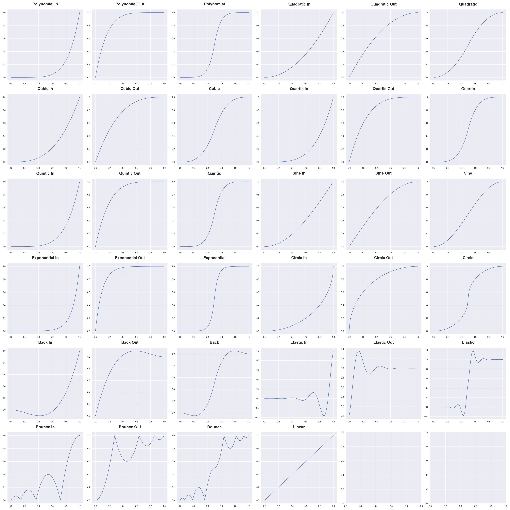

Easing Functions
Returns a linear ease |
|
Returns a polynomial ease |
|
Returns a quadratic ease |
|
Returns a cubic ease |
|
Returns a quartic ease |
|
Returns a quintic ease |
|
Returns a sine ease |
|
Returns an exponential ease |
|
Returns a circular ease |
|
Returns a back ease |
|
Returns an elastic ease |
|
Returns a bounce ease |
Easing Function Graphs
Combine Easing Functions
- combine_easing(easing1: goopylib.maths.easing.EasingType, easing2: goopylib.maths.easing.EasingType) callable
Combines 2 easing functions together.
The 1st easing function is used for t values below 0.5 and the 2nd easing function is used for t values above 0.5
- Parameters
easing1 (
EasingType) – the 1st easing function for t < 0.5easing2 (
EasingType) – the 2nd easing function for t ≥ 0.5
- Raises
TypeError – easing1 and easing2 must be easing functions
Examples
>>> ease1 = gp.ease_elastic_in() >>> ease2 = gp.ease_bounce_out() >>> new_ease = combine_easing(ease1, ease2)
- Return type
callable
{kind=link}